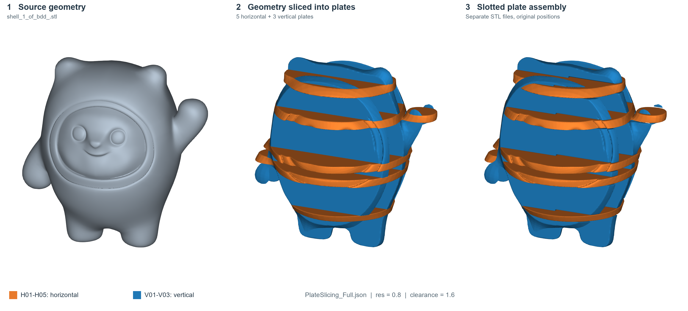
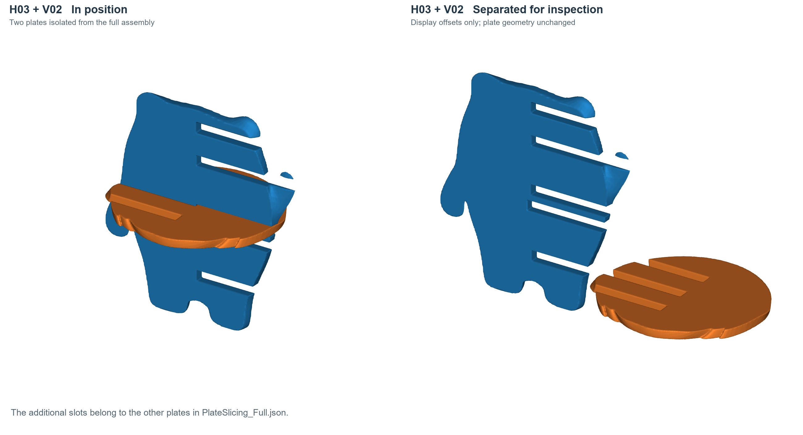
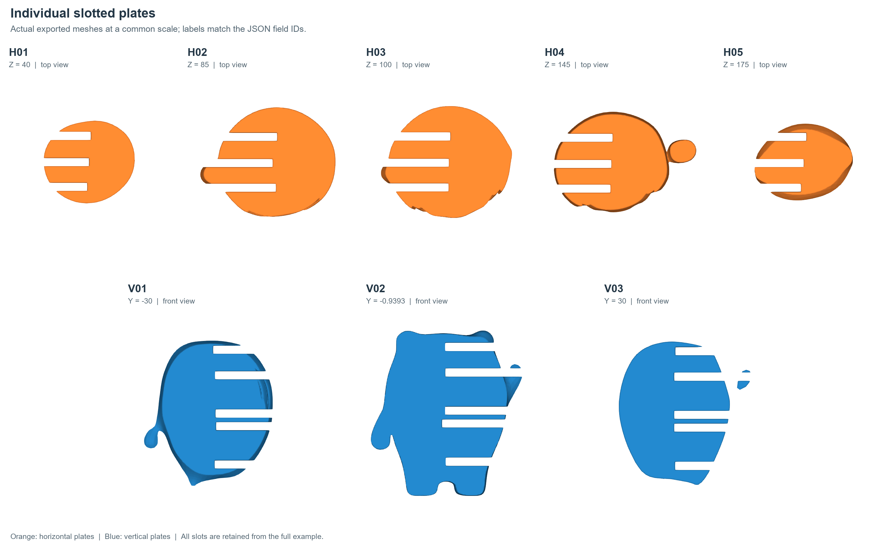

Slicing geometry with plates#
This procedure takes plate-shaped sections through a source geometry, creates complementary slot cutters for intersecting plates, and exports the slotted plates as separate STL meshes. The worked example uses five horizontal plates and three vertical plates. A smaller two-plate workflow is provided first so that the sequence is easy to inspect and adapt.


The full example rendered from Artisan 0.2.18 output. Orange identifies horizontal plates; blue identifies vertical plates.#
The workflow uses Proc_BoxSlices, Gen_SlotCutters,
Clear_LatticeField, Add_Geometry, Subtract_Geometry,
Store_LatticeMesh and ExportMeshID. Use an Artisan backend that supports
these commands and the field-source forms shown below. Values in this chapter
come from the supplied workflow; they are example settings, not a statement of
backend defaults or the full set of accepted options.
Inputs and example files#
Download the two-plate workflow
or the full five-by-three workflow.
The source STL is supplied separately. The full example retains the user’s
original workflow, including its ArtGUI geometry list.
Set Setup.Geomfile to the source mesh. Both examples retain
../../sample-obj/shell_1_of_bdd_.stl and JsonWorkDir: true; resolve that
path relative to the saved JSON file. Update export paths to a writable output
folder. Coordinates, plate dimensions, sampling resolution and clearance must
use the same model units as the source geometry.
The supplied setup uses Type: "Geometry", sampling resolution
res: [0.8, 0.8, 0.8], Padding: 2 and CPU execution
(onGPU: false). Its Sample.Domain contains zero bounds; this chapter
retains that setup rather than prescribing it for every input model. Check the
calculation domain and plate positions when adapting the workflow.
1. Create and name the plate fields#
Proc_BoxSlices defines the slicing boxes. Here Source: "Geometry"
selects the input geometry and Target: "FieldContainer" requests named
fields for subsequent operations. Each box has its own FieldID.
Key |
Example use |
|---|---|
|
Unique field name, such as |
|
Position vector for the slicing box. |
|
Plate normal: |
|
Box size parameters; the example uses |
|
Box orientation setting, retained as |
The full workflow places H01 through H05 at z coordinates 40, 85, 100,
145 and 175. Their x and y coordinates are -83.8332 and -0.9393. It places
V01 through V03 at y coordinates -30, -0.9393 and 30, with x = -83.8332
and z = 100. The smaller example keeps only H01 and V01.
In the Artisan 0.2.18 output used for these figures, length: [110, 110, 4]
produces plates 8 model units thick. For example, the unslotted H03
mesh spans z = 96 to 104 around its z = 100 position.
These locations are specific to the supplied source model. Reposition and resize the boxes to intersect your own geometry; a named box alone does not establish that the resulting plate is useful or that two plates intersect.
2. Generate one cutter pair per plate intersection#
Gen_SlotCutters refers to the plate fields through A and B and
names the resulting cutter fields through Cutters:
{
"Gen_SlotCutters": {
"A": "H01",
"B": "V01",
"direction": [1, 0, 0],
"open_A": "Negative",
"open_B": "Positive",
"split_ratio": 0.5,
"clearance": 1.6,
"Cutters": {
"A": "H01_V01_cut_H",
"B": "H01_V01_cut_V"
}
}
}
Here the slot direction is [1, 0, 0], the two opening settings are
Negative and Positive, the split ratio is 0.5 and clearance is
1.6. Keep the direction and opening settings together when adapting the
joint, then inspect the resulting openings. The example does not establish
the complete list of supported opening choices, bounds for the split ratio,
or whether clearance is applied per side or across the full slot.
Cutters.A is later subtracted from plate A; Cutters.B is subtracted
from plate B. Creating cutter fields is a separate step from applying them.
Use unique output names for every pair to keep references unambiguous.
For five horizontal and three vertical plates the supplied workflow defines 15 pairs, one for every H/V combination. Other plate layouts should create pairs for the intersections that need joints.


H03 and V02 isolated from the full eight-plate workflow. The right view uses display offsets only; the additional slots serve the other plates in the full example.#
3. Build and store each slotted plate#
For each plate, clear the working lattice field, add that plate field, subtract its associated cutter fields, then store the resulting mesh:
{
"3": {"Clear_LatticeField": {}},
"4": {
"Add_Geometry": {
"Source": {"Type": "Field", "ID": "H01"},
"k_factor": 0,
"push2GeomField": false
}
},
"5": {
"Subtract_Geometry": {
"Source": {"Type": "Field", "ID": "H01_V01_cut_H"},
"k_factor": 0,
"push2GeomField": false
}
},
"6": {"Store_LatticeMesh": {"MeshID": "H01_slotted"}}
}
This is a numbered workflow fragment. The complete two-plate JSON below includes its setup, preceding operations and exports.
The Source object selects a named field rather than a mesh filename or
primitive definition. Keep k_factor and push2GeomField as shown when
reproducing this example. Store_LatticeMesh assigns the result a mesh ID
that a later ExportMeshID references.
Repeat the sequence for V01, subtracting H01_V01_cut_V and storing
V01_slotted. In the full example, each horizontal plate receives three
subtractions and each vertical plate receives five. Store each plate before
clearing the working field for the next one. The demonstrated sequence reuses
named plate/cutter fields and previously stored meshes across these clears;
it does not specify the effect of clearing on every other backend resource.
4. Export and inspect the plates#
Export each stored plate using its mesh ID:
{
"ExportMeshID": {
"MeshID": "H01_slotted",
"out_meshfile": "../../Test_results/BingDunDun_Multi_H01_slotted.stl",
"elem_type": "Triangle"
}
}
The full workflow requests eight separate exports, five horizontal and three
vertical. Its PostProcess section is preserved in the downloadable files,
including CombineMeshes: true. Inspect the actual exported files before
relying on a particular cleanup or combination outcome for your backend.


All eight exported plates shown individually at a common physical scale. Plate IDs match the JSON; small disconnected regions present in the output are retained.#
In ArtGUI, open the JSON, select the updated backend and check the input and output paths before generating. Load the exported meshes together to inspect the joint locations, then inspect each plate separately for slot openings, thin remnants and disconnected regions. Older operation catalogues may need refreshing before these commands or parameter forms appear as Add step presets.
Sampling resolution affects the representation of thin plates and slots. Check whether the example’s 0.8 spacing is sufficient for your dimensions and required fit. Geometry output alone does not establish physical assembly clearance; verify fit for the intended fabrication process.
Complete two-plate workflow#
This reduced workflow keeps the supplied setup and one H/V joint. Adjust its model-specific paths and box coordinates before use.
{
"Setup": {
"Type": "Geometry",
"Sample": {
"Domain": [
[
0.0,
0.0
],
[
0.0,
0.0
],
[
0.0,
0.0
]
],
"Shape": "Box"
},
"Geomfile": "../../sample-obj/shell_1_of_bdd_.stl",
"Rot": [
0,
0,
0
],
"res": [
0.8,
0.8,
0.8
],
"Padding": 2,
"onGPU": false,
"JsonWorkDir": true,
"memorylimit": 2147483648
},
"PostProcess": {
"CombineMeshes": true,
"CleanExportedMesh": false,
"RemovePartitionMeshFile": true,
"RemoveIsolatedParts": false,
"ExportLazPts": false
},
"WorkFlow": {
"1": {
"Proc_BoxSlices": {
"Source": "Geometry",
"Target": "FieldContainer",
"Boxes": [
{
"FieldID": "H01",
"ori": [
-83.8332,
-0.9393,
40.0
],
"normal": [
0,
0,
1
],
"length": [
110,
110,
4
],
"z_angle": 0
},
{
"FieldID": "V01",
"ori": [
-83.8332,
-30.0,
100.0
],
"normal": [
0,
1,
0
],
"length": [
110,
110,
4
],
"z_angle": 0
}
]
}
},
"2": {
"Gen_SlotCutters": {
"A": "H01",
"B": "V01",
"direction": [
1,
0,
0
],
"open_A": "Negative",
"open_B": "Positive",
"split_ratio": 0.5,
"clearance": 1.6,
"Cutters": {
"A": "H01_V01_cut_H",
"B": "H01_V01_cut_V"
}
}
},
"3": {
"Clear_LatticeField": {}
},
"4": {
"Add_Geometry": {
"Source": {
"Type": "Field",
"ID": "H01"
},
"k_factor": 0,
"push2GeomField": false
}
},
"5": {
"Subtract_Geometry": {
"Source": {
"Type": "Field",
"ID": "H01_V01_cut_H"
},
"k_factor": 0,
"push2GeomField": false
}
},
"6": {
"Store_LatticeMesh": {
"MeshID": "H01_slotted"
}
},
"7": {
"Clear_LatticeField": {}
},
"8": {
"Add_Geometry": {
"Source": {
"Type": "Field",
"ID": "V01"
},
"k_factor": 0,
"push2GeomField": false
}
},
"9": {
"Subtract_Geometry": {
"Source": {
"Type": "Field",
"ID": "H01_V01_cut_V"
},
"k_factor": 0,
"push2GeomField": false
}
},
"10": {
"Store_LatticeMesh": {
"MeshID": "V01_slotted"
}
},
"11": {
"ExportMeshID": {
"MeshID": "H01_slotted",
"out_meshfile": "../../Test_results/BingDunDun_Multi_H01_slotted.stl",
"elem_type": "Triangle"
}
},
"12": {
"ExportMeshID": {
"MeshID": "V01_slotted",
"out_meshfile": "../../Test_results/BingDunDun_Multi_V01_slotted.stl",
"elem_type": "Triangle"
}
}
}
}
Extending the example#
When adding plates, assign each box a unique FieldID; add cutter pairs
with unique output IDs; subtract every relevant cutter from its plate; and
store and export that plate with a unique MeshID and output filename.
Preserve this order: plate fields, cutter fields, per-plate construction,
then mesh exports. Missing references usually indicate a spelling mismatch,
an omitted producer step or a step placed after its consumer.
See Grid Field Container for named fields, Guide - Basics 02 for geometry operations and Build and edit workflows for workflow editing.